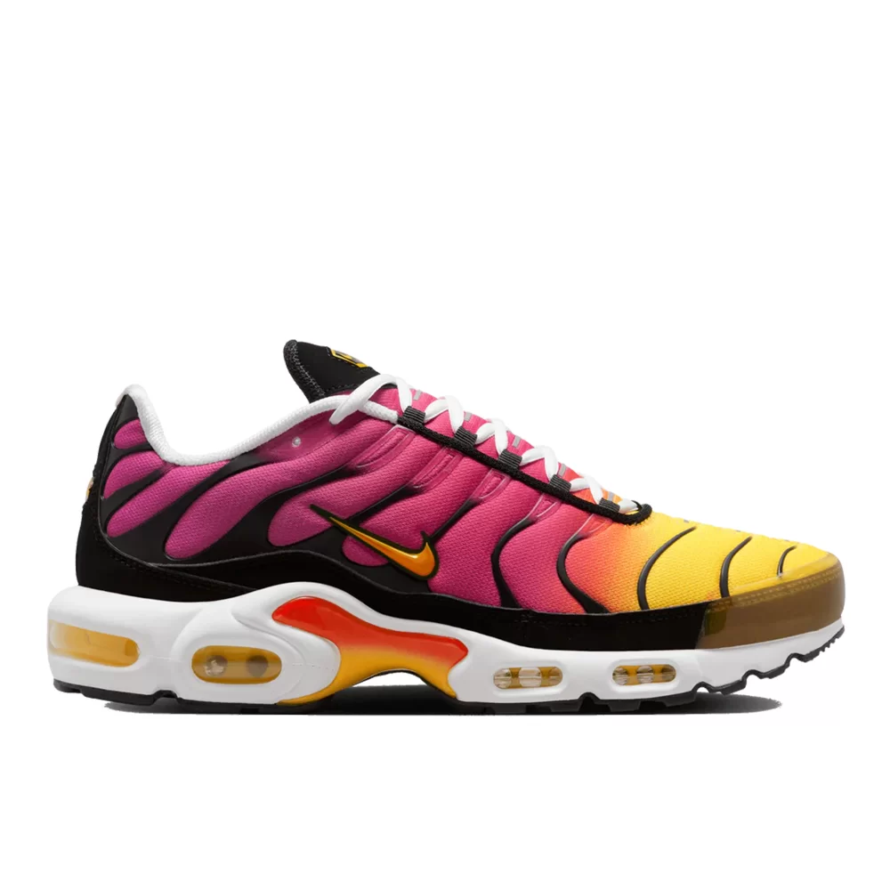
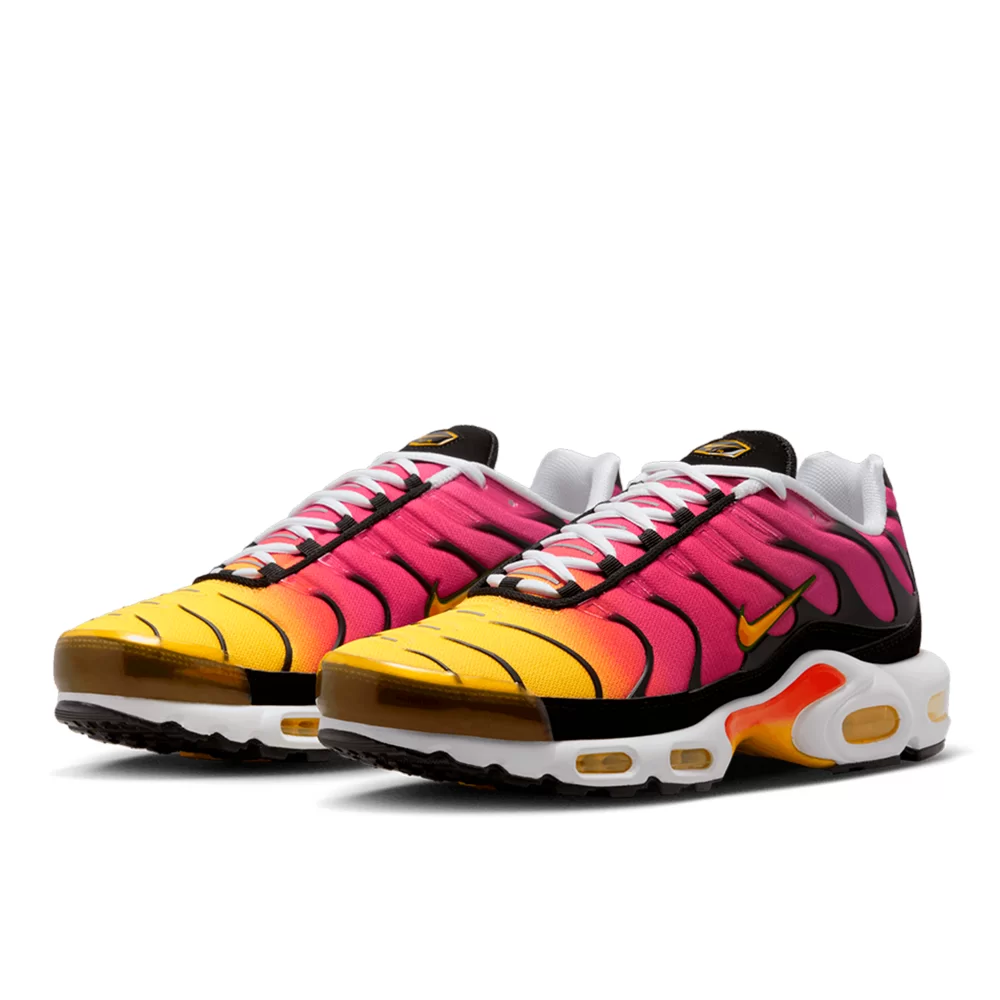
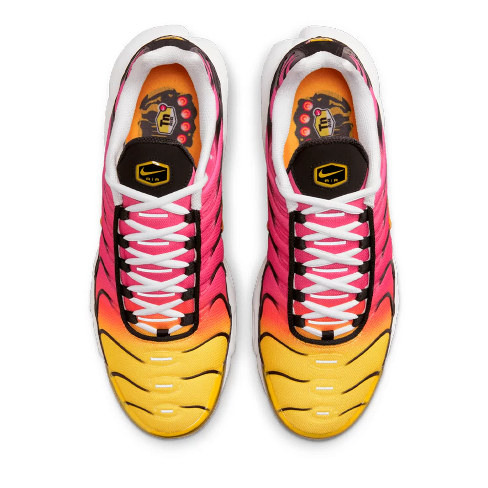
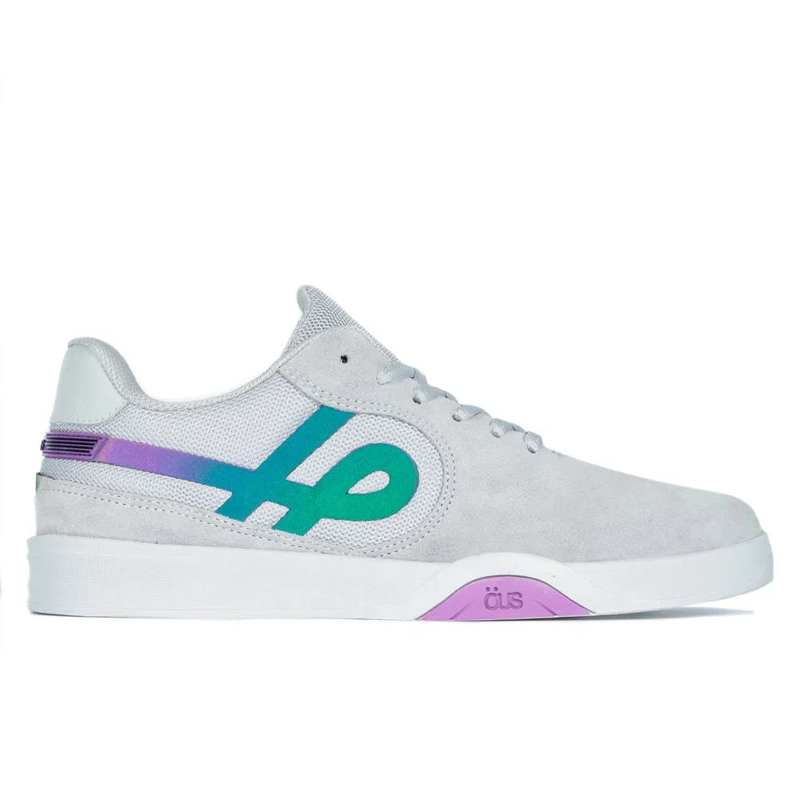
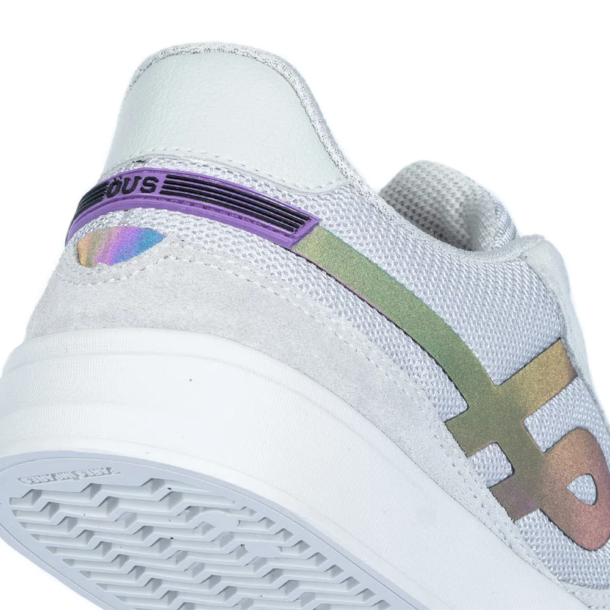
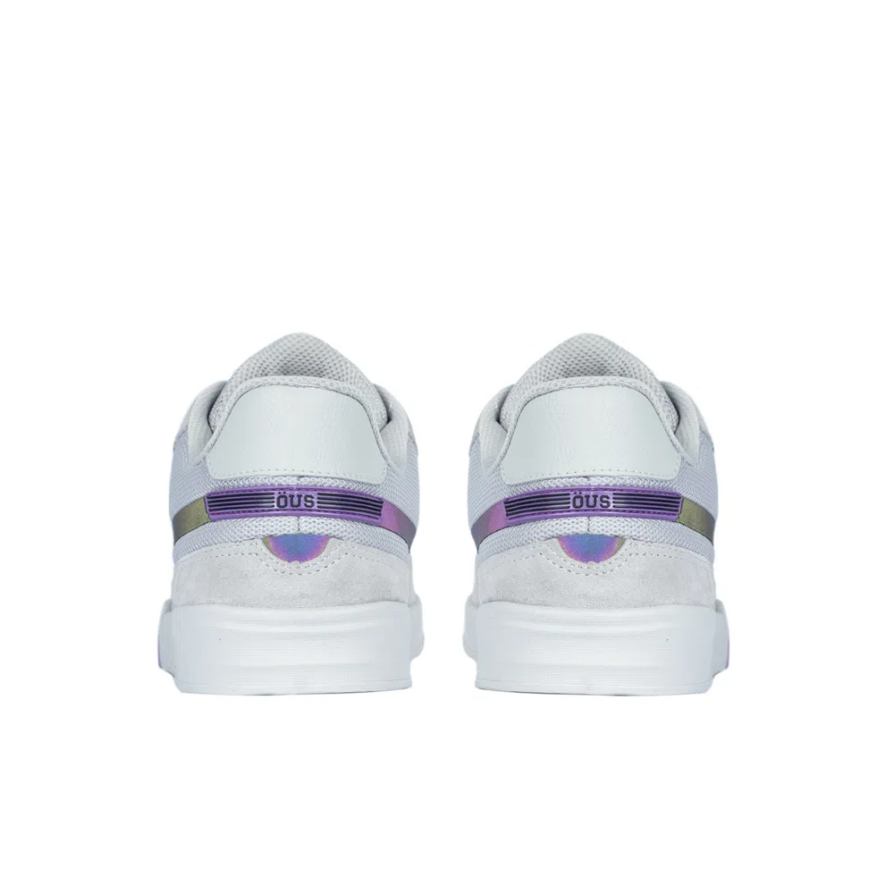
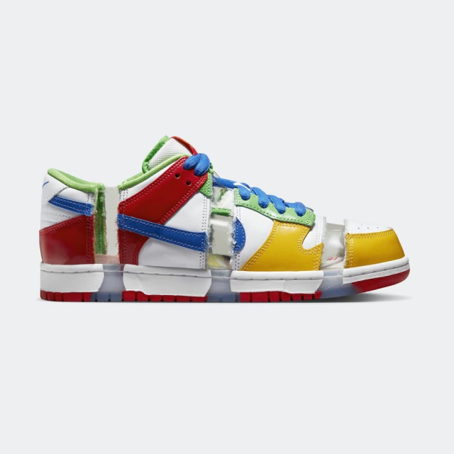
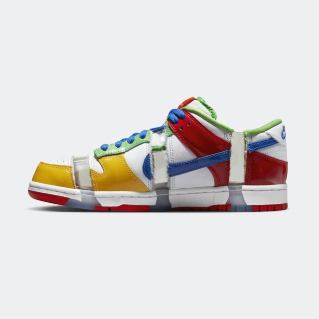
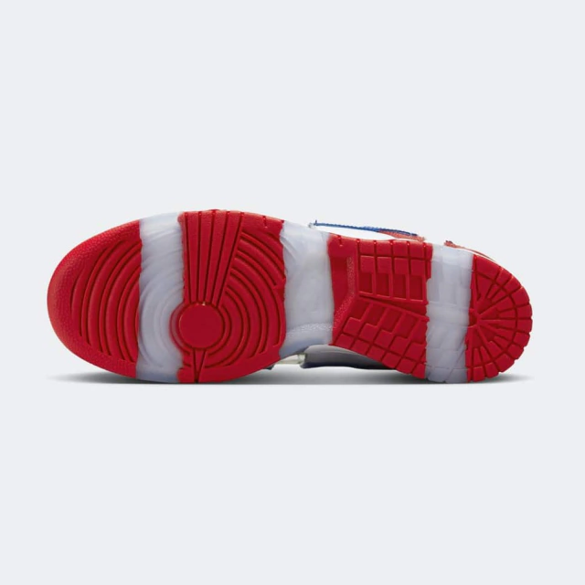

produtos



TÊNIS NIKE AIR MAX PLUS TN " RAINBOW " AMARELO/ROSA
R$ 1199,99
ou 10x de R$ 120,00
detalhes sobre o produtos
Da impressão digital ao forro aconchegante (que lembra os aquecimentos super macios) ao emblema da bola coroada na língua, ele permite que você leve seu jogo para fora do campo com o estilo clássico do futebol.
Originalmente projetadas para treinos de corrida, as unidades Nike Air oferecem amortecimento com leveza e durabilidade.
Trazendo a vida praiana aos centros urbanos, o proeminente arco foi inspirado na cauda de uma baleia e acrescenta estrutura, enquanto os icônicos dedos ondulados remetem à palmeiras e ondas do oceano.
A parte de cima em material sintético proporciona conforto com leveza e durabilidade.
A sola de borracha de comprimento total acrescenta tração e durabilidade à sua jornada.
air jordan 4


R$ 1799,99
ou 10x de R$ 180,00
Detallhes sobre o produtos
Oh céus - vocês dois se conheceram? Antigos e novos se familiarizam nesta versão artesanal do design Tinker Hatfield de 1989. O couro com relevo em grade para um toque premium, a camurça macia e as linhas de pontos extras na parte superior trazem o toque artesanal. E um forro macio e escovado torna este AJ4 mais feliz do que uma manhã preguiçosa. Então, da próxima vez que você calçar para completar um look inspirador, busque pelo seu novo favorito
TÊNIS IMIGRANTE NUVEM FURTA COR ESSENCIAL



R$ 429,90
ou 6x de R$ 71,65 no cartão
Detalhes do produto
Descrição
O Imigrante possui materiais que garantem resistência, aderência, maciez e muito estilo num par de tênis. Nesse modelo, possui filigrama refletivo e furta-cor.
Especificações
Tênis Öus Imigrante Nuvem Furta Cor Essencial
.: Camurça / Mesh / Sintético / Sintético Refletivo Furta Cor / Forro Esportivo;
.: Etiqueta na lingueta aplicada por fusion;
.: Contorno do calcanhar delineado e estruturado com contraforte termoconformado;
.: Solado de borracha A+;
.: Palmilha CIRCULAR HARD;
.: Caixa especial Floral.
Nike SB Dunk Low



R$ 999,99
ou 10x de R$ 100,00
detalhes do produto
Isto é coisa da mitologia do skate. Com apenas dois pares originais fabricados em 2003, esses tênis já eram dos mais raros. Um par foi serrado em pedaços e o par restante foi leiloado pelo maior lance em um evento de arrecadação de fundos. A contribuição de caridade para os parques de skate da área de Portland foi muito apreciada, mas quem comprou o tênis? A identidade do maior lance permaneceu um mistério por anos, até que finalmente foi revelado que o comprador era ninguém menos que o inovador Sandy Bodecker. Sua influência no skate e na Nike não pode ser exagerada, e esta história de leilão é apenas mais uma peça desse legado. Não dizemos que ele é o homem que colocou o SB no Nike SB sem motivo. Respeito.
A versão que você vê agora é uma homenagem aos Charity Dunks originais de 2003 - sua destruição e Sandy. Renderizado em couro envernizado com janelas cortadas translúcidas, o Dunk Low "Sandy" remonta a colorway histórica e adiciona detalhes Nike SB Forever. E aquelas imagens da palmilha? Eles comemoram Sandy e suas contribuições primordiais para o legado e a narrativa da Nike SB.